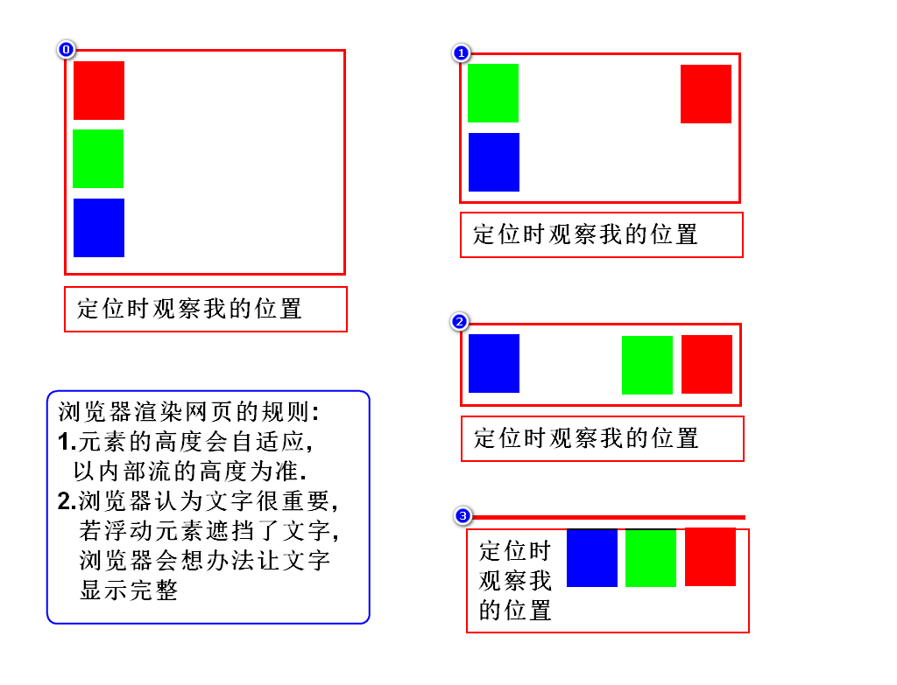
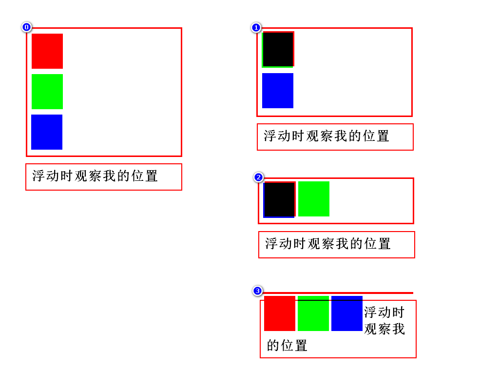
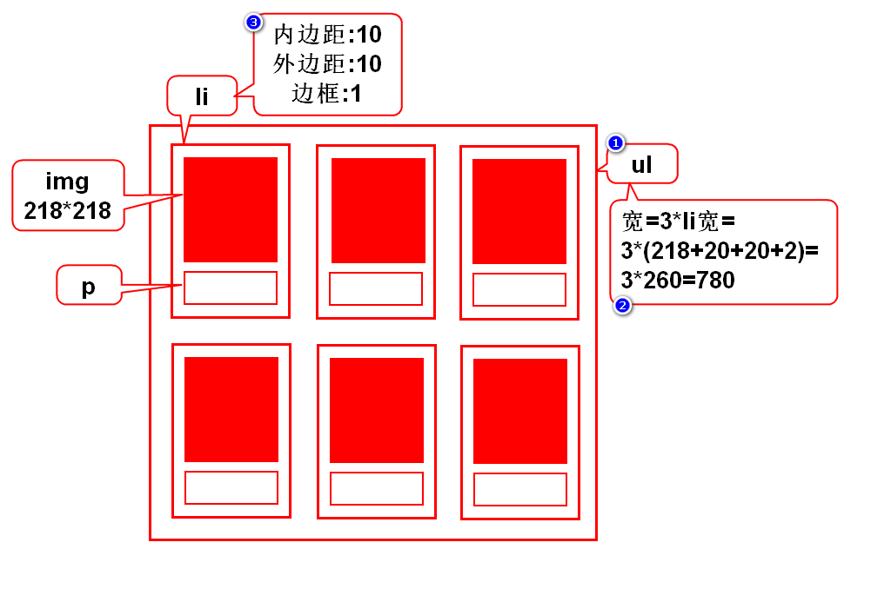
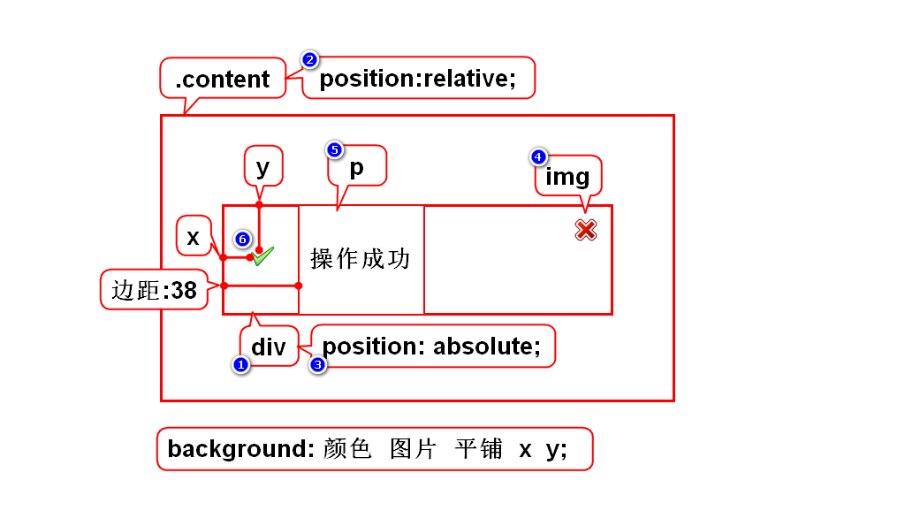

`
█ 前端基础
1. 主要内容
- HTML: 勾勒出网页的结构和内容
- CSS: 层叠样式表, 美化网页
- JavaScript: 动态网页脚本, 让网页呈现动态的数据和效果
- jQuery: 一个 JavaScript 框架, 提高JS的开发效率
2. 参考链接
█ HTML
一. WEB 概述
1. Web三要素
- 浏览器：向服务器发起请求，下载服务器中的网页（HTML文件），然后执行 HTML 显示出内容
- 服务器：接收浏览器的请求，发送相应的页面到浏览器
- HTTP协议：浏览器与服务器的通讯协议
2. 工作原理

- HTML 是带标记的文本文件, 部署在服务器上, 在浏览器上解释执行 根据 HTTP 协议, 浏览器发出请求给服务器，服务器做出响应, 给浏览器返回一个 HTML
- 浏览器解释执行 HTML, 从而显示出内容
3. 标记语言
3.1. XML
- 可扩展（自定义）标记语言
- 标记，属性，标记之间的关系都可以扩展
- 用来存储或传输数据
3.2. HTML
- 超文本标记语言
- 用来设计网页的标记语言, 文件以 .html 或 .htm 为后缀
- 由浏览器解释执行, 可以嵌套用脚本语言编写的程序段
- 标记、属性、标记之间的关系都是固定的（由 W3C 制定标准）
- 可以将 HTML 理解为标签固定的 XML, 某些版本的 HTML 是严格遵守 XML 规范
3.3. XHTML
XHTML 包含的内容与 html 4.01 基本相同, 但对格式的要求更加严谨
文档结构
- XHTML DOCTYPE 是强制性的
- 必须在
<html>中的指定 XML namespace <html>、<head>、<title>以及<body>必不可少
元素语法
- 元素必须正确嵌套
- 元素必须始终关闭
- 元素必须小写
- 必须有一个根元素
属性
- 属性必须使用小写
- 属性值必须用引号包围
- 禁止属性最小化也是的
3.4. HTML5
最新的 html 标准, 相对于 html 4.01 的混乱, 以及 xhtml 中的过分严谨, 推出了新的标准.
HTML5 仍处于完善之中。然而，大部分现代浏览器已经具备了某些 HTML5 支持。
二. HTML 基础概念
1. 基本概念
由于 html + css + javaScript 是网页外发的事实标准, 三者的分工更加明确. 最新的 html5 更加关注于网页内容的结构, 提供了更多的语义化标签. 而在 html4 标准中关于布局和样式的相关属性, 基本上都被废弃, 建议使用 css 来实现网页样式的控制.
标签
HTML 标签 (HTML tag), 是用尖括号括起来的关键词.
双标签 成对出现的标签, 开始标签 + 结束标签, 结束标签有结束符号(斜杠 /), 双标签中间是标签要表达的内容
<标签 属性=属性值> 内容 < /标签>
单标签 单独出现的标签, 一个标签即可把内容表达清楚
<标签 属性=属性值>
注释
HTML 支持在文件中添加注释, 注释可以跨行, 不可嵌套
< !-- 注释内容 -->
属性
全局属性, 适用于绝大多数元素
| 属性 | 描述 |
|---|---|
| accesskey | 设置访问元素的键盘快捷键。 |
| class | 规定元素的类名（classname） |
| contenteditable | 规定是否可编辑元素的内容。 |
| contextmenu | 指定一个元素的上下文菜单。当用户右击该元素，出现上下文菜单 |
| data-* | 用于存储页面的自定义数据 |
| dir | 设置元素中内容的文本方向。 |
| draggable | 指定某个元素是否可以拖动 |
| dropzone | 指定是否将数据复制，移动，或链接，或删除 |
| hidden | hidden 属性规定对元素进行隐藏。 |
| id | 规定元素的唯一 id |
| lang | 设置元素中内容的语言代码。 |
| spellcheck | 检测元素是否拼写错误 |
| style | 规定元素的行内样式（inline style） |
| tabindex | 设置元素的 Tab 键控制次序。 |
| title | 规定元素的额外信息（可在工具提示中显示） |
| translate | 指定是否一个元素的值在页面载入时是否需要翻译 |
内容
开始标签与结束标签之间的内容, 称为元素的内容
元素
HTML 元素
html 5 标准中, 规定了六种元素
空元素
指只有标签和属性, 没有下级元素的标签元素. 对于空元素, 不需要闭合标签, 也不需要自闭合斜杠.
- area 定义图像映射区域（带有可点击区域的图像), 始终嵌套在
<map>元素内部 - base 规定页面上所有的相对地址的默认 URL 或默认目标, 只能使用一次, 且在
<head>元素内 - br 插入一个简单的换行符
- col 规定了
<colgroup>元素内部的每一列的列属性, 可以向整个列应用样式 - embed: 定义了一个容器，用来嵌入外部应用或者互动程序（插件）
- hr 定义 HTML 页面中的主题变化（比如话题的转移），并显示为一条水平线。
- img 定义 HTML 页面中的图像, 有两个必需的属性：
src和alt - input 规定输入数据的输入字段. 在
<form>元素中使用, 通过type属性改变输入方式 - link 定义惠html文档与外部资源的关系, 常用来引入 css 文件
- meta 提供了 HTML 文档的元数据。元数据不会显示在客户端，但是会被浏览器解析
- param 允许您为插入 XHTML 文档的对象规定 run-time 设置，也就是说，此标签可为包含它的 object 或者 applet 标签提供参数。
- source 为媒体元素（比如
<video>和<audio>）定义媒体资源, 允许提供多个备选 - track 为媒体元素（比如
<audio>and<video>）规定外部文本轨道 - wbr 如果单词太长 , 可以规定在文本中的何处适合添加换行符
模板元素
template
原始文本元素
xxxxxxxxxxscript`, `style
可选的原始文本元素
xxxxxxxxxxtextarea`, `title
外部元素
Elements from the MathML namespace and the SVG namespace.
来自 MathML 和 SVGML 规范中的元素, 对于此类元素, 需要使用闭合标签或自闭合斜杠, 以保证正确解析.
普通元素
其他的各种标签元素
2. HTML 文档结构
2.1. 版本声明
HTML 有多个不同版本的标准, 不同版本支持的标签功能有区别, 会导致页面显示效果不一致. 因此在文档中要明确指出采用的 HTML 版本, 浏览器才能正确解读文件, 达到理想的效果.
HTML 版本需要在文档开头声明, <!DOCTYPE> 该声明不是 HTML 标签, 它告诉浏览器应该用什么标准来解读当前页面
版本声明不区分大小写
< !DOCTYPE html版本信息>
xxxxxxxxxx常用的 HTML5 声明<!DOCTYPE html>
2.2. 根标签
- 每个HTML文件都有一个根标签, 根标签为
<HTML> - 根标签之下有两个子标签, 头部
<head>与主体<body>.
2.3. 头部
<head>元素是所有头部元素的容器, 可以声明元信息, 指示浏览器在何处可以找到样式表, 脚本等等
标题
<title>指定页面的标题, 该标题可用在收藏夹, 或作为搜索引擎结果的页面标题元信息
<meta>关于 HTML 文档的元数据, 不会显示在页面上, 用以告知浏览器必要信息. 如页面的描述, 关键词, 文档作者, 最后修改时间以及其他元数据等关联资源
<link>如当前文档关联的样式表
2.4. 主体
HTML 页面的具体页面内容
综上, 一个完整的html 结构如下
xxxxxxxxxx<html> <head> <title>完整的 html 结构</title> <meta charset="utf-8"> </head> <body> <!-- 页面具体内容 --> </body></html>
三. HTML 页面内容
1. 文本类
文本是网页上的重要组成部分, 直接书写的文本会用浏览器默认的样式显示, 也可以用相应的文本类标签进行处理.
标题
<h1>~<h6>标题元素让文字以醒目的方式显示, 往往用于文章的标题, 有 h1~h6 六个等级
段落
<p>结构化文本的一种方式, 段落元素中的文本独立成段, 有段间距
列表
列表是值将具有相似特征或者先后顺序的几行文字进行对齐排列.
列表元素可以嵌套使用, 可以创建多层列表, 常用于创建文档大纲, 导航菜单等
- 有序列表
<ol>: 有序列表, 按顺序将列表项对齐排列, 段首有数字编号 - 无序列表
<ul>: 无序列表, 将列表项对齐排列, 段前有段落标记, 但没有数字编号 - 列表项
<li>: 无论是有序列表还是无序列表, 在列表之中都有列表项
xxxxxxxxxx<ul><li>无序列表1</li><li>无序列表2</li><!-- 嵌套无序列表, 此处不要关闭 --><li id="a">嵌套无序列表<ul><li>无序列表1</li><!-- 嵌套有序列表, 此处不要关闭 --><li id="b">嵌套有序列表<ol><li>有序列表1</li><li>有序列表2</li></ol><!-- 嵌套有序列表结束, 关闭 b --></li></ul><!-- 嵌套无序列表结束, 关闭 a --></li></ul>- 有序列表
自定义列表
<dl>- 自定义列表项
<dt>
xxxxxxxxxx<dl><dt>列表组A</dt><dd>列表项A-1</dd><dd>列表项A-2</dd><dt>列表组B</dt><dd>列表项B-1</dd><dd>列表项B-2</dd><dt>列表组C</dt><dd>列表项C-1</dd><dd>列表项C-2</dd></dl>- 自定义列表项
行内元素
- 行内元素
span没有特定的含义, 可用于为行内部分文本设置样式属性 - 加粗
<b> - 斜体
<i> - 下划线
<u> - 删除线
<del>
- 行内元素
2. 多媒体
图像 <img>
使用单标记< img>元素, 将图像添加到页面
- src 用于指定图像文件的位置, 可使用相对路径或绝对路径
- width 设置图片的显示宽度, 通常以像素为单位指定, 也可使用相对父级区域的百分比
- height 设置图片的显示高度, 通常以像素为单位
- alt 设置图片无法正常显示时的替代文本, 建议填写
- title 设置鼠标悬停时在图片上显示的文本信息, 建议填写
视频 <video>
可以在标签内放置文本内容, 这样在不支持 video 元素的浏览器中可以显示提示信息
- src 用于指定图像文件的位置, 可使用相对路径或绝对路径
- width 设置播放器宽度, 通常以像素为单位指定, 也可使用相对父级区域的百分比
- height 设置播放器高度, 通常以像素为单位
- autoplay 是否自动播放
- controls 是否显示控件, 如播放按钮
- loop 是否循环播放
- muted 是否静音播放
- poster 封面图片
- preload 是否提前加载
x<!-- 使用 src 属性给出视频地址 --><video width="320" height="240" controls src="movie.mp4"></video><!-- 使用 source 下级元素给出备选地址--><video width="320" height="240" controls> <source src="movie.mp4" type="video/mp4"> <source src="movie.ogg" type="video/ogg"></video>音频
- 插件
- object
- audio
绘图 SVG, canvas
插件
3. 超链接
超链接
<a>外部文档
内部锚点, html4 中锚点跳转功能需要用另一个
<a>元素的name属性来声明锚点, 在 html 5 中已废弃xxxxxxxxxx<!-- html4 中的锚点跳转功能 --><a name="mark4">声明锚点</a>...<a href="#mark4">跳到锚点</a>内部书签, html5 文档内任意一个设置了 id 属性的元素, 都可以视为一个书签 可以通过
<a>标签快速跳转xxxxxxxxxx<!-- html5 中的书签跳转功能 --><p id="markP">段落</p><div id="markDiv">div块</div><h2 id="markH2">二级标题</h2>...<a href="#markP">跳到段落</a><a href="#markDiv">跳到div块</a><a href="#markH2">跳到二级标题</a>
| 值 | 描述 |
|---|---|
| _blank | 在新窗口中打开被链接文档。 |
| _self | 默认。在相同的框架中打开被链接文档。 |
| _parent | 在父框架集中打开被链接文档。 |
| _top | 在整个窗口中打开被链接文档。 |
| framename | 在指定的框架中打开被链接文档。 |
| 属性 | 描述 |
|---|---|
| target | 规定在何处打开目标 URL。仅在 href 属性存在时使用。 |
| href | 规定链接的目标 URL。 |
| download | 指定下载链接 |
| hreflang | 规定目标 URL 的基准语言。仅在 href 属性存在时使用。 |
| media | 规定目标 URL 的媒介类型。默认值：all。仅在 href 属性存在时使用。 |
| rel | 规定当前文档与目标 URL 之间的关系。仅在 href 属性存在时使用。 |
| type | 规定目标 URL 的 MIME 类型。仅在 href 属性存在时使用。 |
4. 表格
4.1. 作用
- 表格通常用来组织结构化的信息, 是由单元格排列而成
- 也可以使用表格来为页面分区
4.2. 标签
| 标签 | 描述 |
|---|---|
| table | 定义表格, 划分出表格整体的作用范围 |
| tr | 定义表格的行 |
| th | 定义表头单元格, 默认居中加粗 |
| td | 定义普通单元格 |
| caption | 定义表格标题, 默认居中显示 |
| colgroup | 定义表格列的组, 对列进行组合,以便格式化 |
| col | 规定了colgroup元素内部的每一列的列属性 |
| thead | 定义表格的页眉 |
| tbody | 定义表格的主体 |
| tfoot | 定义表格的页脚 |
4.3. 属性
| 属性 | 描述 | 适用元素 |
|---|---|---|
| scope | 规定表头单元格是否是行、列、行组或列组的头部. 语义属性, 没有视觉效果 | th |
| headers | 指定单元格关联的表头. 语义属性, 没有视觉效果 | td, th |
| colspan | 跨列, 规定单元格可横跨的列数 | td, th |
| rowspan | 跨行, 规定单元格可横跨的行数 | td, th |
| span | 为列和列组指定属性时的跨列数 | colgroup, col |
4.4. 示例
xxxxxxxxxx<table> <caption>表格功能演示</caption> <colgroup> <col style="background-color: coral"> <col span="2" style="background-color: darkcyan"> <col span="3" style="background-color: darkgray"> </colgroup> <thead style="background-color: cornflowerblue"> <tr> <th>表头1</th> <th colspan="2">表头2+3</th> <th>表头4</th> <th>表头5</th> </tr> </thead> <tbody> <tr> <td>1-1</td> <td rowspan="2">跨行格子</td> <td colspan="2">跨列格子</td> <td>1-5</td> </tr> <tr> <td>2-1</td><td>2-3</td><td>2-4</td><td>2-5</td> </tr> <tr> <td>3-1</td><td>3-2</td><td>3-3</td><td>3-4</td><td>3-5</td> </tr> <tr> <td>4-1</td><td>4-2</td><td>4-3</td><td>4-4</td><td>4-5</td> </tr> </tbody> <tfoot style="background-color: darkorchid"> <tr> <td>表尾-1</td><td>表尾-2</td><td>表尾-3</td><td>表尾-4</td><td>表尾-5</td> </tr> </tfoot></table>5. 表单
表单, 用于收集不同类型的用户输入。
5.1. 表单组织
1) 声明表单 <form>
form 标签声明表单并指定表单的范围, 提交表单时会将表单范围内的所有表单域内容提交到服务器.
可以使用以下属性对表单进行配置.
| 属性 | 描述 |
|---|---|
| accept-charset | 规定服务器可处理的表单数据字符集。 |
| action | 规定当提交表单时向何处发送表单数据。 |
| autocomplete | 规定是否启用表单的自动完成功能。on 或off |
| enctype | 规定在向服务器发送表单数据之前如何对其进行编码。（适用于 method="post" 的情况） |
| method | 规定用于发送表单数据的 HTTP 方法。 |
| name | 规定表单的名称。以便在 javaScript 中引用表单数据 |
| novalidate | 如果使用该属性，则提交表单时不进行验证。 |
| target | 规定在何处打开 action URL. 与<a>的target属性一致 |
2) 组件标签 <label>
通过 label 元素, 可以将表单域与文本内容绑定在一起, 增加表单域的面积, 便于操作. 有以下两种处理方式
xxxxxxxxxx<!-- label 与表单域分开, 通过 for 属性关联 --><input type="checkbox" checked id="check1" /><label for="check1">我已阅读并愿遵守此协议</label><!-- label 包含表单域, 不需 for 属性 --><label> <input type="checkbox" checked id="check2"> 我已阅读并愿遵守此协议</label>2) 组件分组 <fieldset>
可以使用 fieldset 对表单域进行分组, 加边框. legend 为该组的组名
xxxxxxxxxx<fieldset> <legend>个人基本信息:</legend> <label>姓名:<input type="text" size="30"></label><br> <label>电话:<input type="text" size="30"></label><br> <label>生日:<input type="date" size="10"></label></fieldset>
可以为 fieldset 指定属性, legend 无配置属性
5.2. input 元素
最常用的表单输入组件, input 元素的 type 属性提供 23 种输入类型, 但不同浏览器的支持程度不一致, 部分类型暂未得到支持.
以下属性为适用于所有类型通用的属性. 针对不同类型的 input 元素的专用属性详见后续的内容.
| 属性 | 描述 |
|---|---|
| type | 规定该表单字段的类型 |
| name | 规定该表单字段的名称 |
| value | 指定该表单字段的值 |
| readonly | 规定输入字段是只读的, 不可编辑. 最小化字段 |
| required | 规定字段时必须的, 提交表单之前需要填写. 最小化字段 |
| disabled | 规定应该禁用的元素, 不可修改, 也不提交到服务器. 最小化字段 |
| autocomplete | 规定该字段是否启用浏览器自动完成功能, on 或 off |
| autofocus | 规定页面加载时该字段自动获得焦点 |
| form | 规定在<form> 元素外的 <input> 仍输入指定表单 |
1) 文本输入
| 类型 | 描述 |
|---|---|
| text | 默认。定义一个单行的文本字段（默认宽度为 20 个字符）。 |
| password | 定义密码字段（字段中的字符会被遮蔽）。 |
| number | 定义用于输入整数的字段。 |
| hidden | 定义隐藏输入字段, 通常用来存放不需用户输入, 但需要与表单一同提交的数据 |
| 定义用于 e-mail 地址的字段 | |
| url | 定义用于输入 URL 的字段 |
| search | 定义用于输入搜索字符串的文本字段。 |
| tel | 定义用于输入电话号码的字段。 |
| 属性 | 描述 |
|---|---|
| placeholder | 规定描述输入字段预期值的简短的提示信息 。 |
| maxlength | 规定 元素中允许的最大字符数。 |
| size | 规定以字符数计的元素的可见宽度。 |
| pattern | 规定用于验证字段的值的正则表达式。 |
| list | 引用 <datalist>元素，其中包含当前字段的预定义选项。 |
| min | 规定 元素的最小值。仅适用于 number和 range |
| max | 规定元素的最大值。仅适用于 number和 range |
| step | step 属性规定元素的合法数字间隔。仅适用于 number和 range |
2) 功能控件
| 类型 | 描述 |
|---|---|
| file | 定义文件选择字段和 "浏览..." 按钮，供文件上传。 |
| range | 通过滑块输入数字, 配合 min/max/step属性使用, value 默认为合法数值的中间值 |
| color | 定义拾色器。 |
| date | 定义 date 控件 |
| time | 定义用于输入时间的控件（不带时区） |
| month | 定义 month 和 year 控件（不带时区） |
| week | 定义 week 和 year 控件（不带时区） |
| datetime-local | 定义 date 和 time 控件（不带时区） |
| datetime | 定义 date 和 time 控件（基于 UTC 时区) |
3) 选择框
| 类型 | 描述 |
|---|---|
| radio | 单选框, value属性指定选项的值, name 属性相同的为一组, 相互排斥 |
| checkbox | 复选框, value属性指定选项的值, name 属性相同的为一组 |
| 属性 | 描述 |
|---|---|
| checked | checked 属性规定在页面加载时应该被预先选定的元素, 最小化属性 |
xxxxxxxxxx<h4>单选框组:</h4><label><input type="radio" name="radio1" value="0">未知</label><label><input type="radio" name="radio1" value="1">男</label><label><input type="radio" name="radio1" value="2">女</label><h4>复选框组:</h4><label><input type="checkbox" name="cb1" value="1">中国</label><label><input type="checkbox" name="cb1" value="2">广东</label><label><input type="checkbox" name="cb1" value="3">深圳</label>4) 按钮
| 类型 | 描述 |
|---|---|
| submit | 提交按钮, 将表单的内容提交到服务器 |
| reset | 重置按钮, 将表单的内容清除, 恢复到初始状态 |
| button | 自定义按钮, 结合 js, 给按钮绑定事件, 实现自定义功能 |
| image | 以图片作为提交按钮 |
| 属性 | 描述 |
|---|---|
| height | 规定图片显示高度. 仅适用于image |
| width | 规定图片显示宽度。 仅适用于image |
| alt | 定义图像输入的替代文本。 仅适用于image |
| src | src 属性规定显示为提交按钮的图像的 URL。仅适用于image |
| formaction | 属性规定当表单提交时处理输入控件的文件的 URL。适合 submit 和 image |
| formenctype | 属性规定当表单数据提交到服务器时如何编码. 适合 submit 和 image |
| formmethod | 定义发送表单数据到 action URL 的 HTTP 方法. 适合 submit 和 image |
| formtarget | 规定表示提交表单后在哪里显示接收到响应的名称或关键词。适合 submit 和 image |
| formnovalidate | 覆盖 <form> 元素的 novalidate 属性, 忽略输入校验。适合 submit 和 image |
xxxxxxxxxx<input type="submit" value="提交按钮"><br><input type="reset" value="重置按钮"><br><input type="button" value="普通按钮"><br><input type="image" src="../assets/logo.png" alt="图片按钮"><br>5.2 其他元素
1) 文本域 <textarea>
可以自由改变大小的文本框 默认大小为2*20 双标签中间为默认值
| 属性 | 值 | 描述 |
|---|---|---|
| name | text | 规定文本区域的名称。 |
| rows | number | 规定文本区域内可见的行数。 |
| cols | number | 规定文本区域内可见的宽度。 |
| placeholder | text | 规定一个简短的提示，描述文本区域期望的输入值。 |
| readonly | readonly | 规定文本区域为只读。 |
| disabled | disabled | 规定禁用文本区域。 |
| required | required | 规定文本区域是必需的/必填的。 |
| form | form_id | 定义文本区域所属的一个或多个表单。 |
| maxlength | number | 规定文本区域允许的最大字符数。 |
| autofocus | autofocus | 规定当页面加载时，文本区域自动获得焦点。 |
| wrap | hard soft | 规定当提交表单时，文本区域中的文本应该怎样换行。 |
xxxxxxxxxx<textarea cols="20" rows="2" placeholder="请输入个人简介, 500字以内"></textarea>2) 下拉选 <select>
select 表示下拉选, option 指示各个选项, 第一个选项往往设为提示信息,还可以利用 optgroup进行分组.
xxxxxxxxxx<select > <optgroup label="华东区" disabled> <option>上海</option> <option>浙江</option> <option>江苏</option> </optgroup> <optgroup label="华北区"> <option>北京</option> <option>天津</option> <option>河北</option> </optgroup></select>
| 属性 | 描述 | 适用元素 |
|---|---|---|
| name | 定义下拉列表的名称。 | select |
| form | 定义 select 字段所属的一个或多个表单。 | select |
| multiple | 当该属性为 true 时，可选择多个选项。 | select |
| autofocus | 规定在页面加载时下拉列表自动获得焦点。 | select |
| required | 规定用户在提交表单前必须选择一个下拉列表中的选项。 | select |
| size | 规定下拉列表中可见选项的数目。默认1, multiple时为4 | select |
| disabled | 当该属性为 true 时，禁用下拉列表, 或禁用选项/选项组 | select, optgroup, option |
| label | 为选项组规定描述。 | optgroup, option |
| selected | 标记为选中状态 | option |
| value | 提交表单时发送的选项值 | option |
3) 按钮 <button>
定义一个按钮. 与 input 元素按钮的区别在于, 可以在 button 元素内部放置内容, 如文字或图像等.
| 属性 | 描述 | 适用type |
|---|---|---|
| autofocus | 规定当页面加载时按钮应当自动地获得焦点。 | |
| disabled | 规定应该禁用该按钮。 | |
| form | 规定按钮属于一个或多个表单。 | |
| name | 规定按钮的名称。 | |
| type | 规定按钮的类型。 | |
| value | 规定按钮的初始值。可由脚本进行修改。 | |
| formaction | 规定当提交表单时向何处发送表单数据。覆盖 form 元素的 action 属性。 | submit |
| formenctype | 规定在提交表单数据的编码方式。覆盖 form 元素的 enctype 属性。 | submit |
| formmethod | 规定用于发送表单数据的 HTTP 方法。覆盖 form 元素的 method 属性。 | submit |
| formnovalidate | 提交表单时不进行验证。覆盖 form 元素的 novalidate 属性。 | submit |
| formtarget | 规定在何处打开 action URL。覆盖 form 元素的 target 属性。 | submit |
xxxxxxxxxx<button type="button" onclick="alert('点击文字按钮!')">文字按钮</button><br><button type="button" onclick="alert('点击图片按钮!')"> <img src="../assets/logo.png" alt="图片按钮" width="53" height="53"></button>4) 预设数据 <datalist>
与 input 的 list 属性配合使用, 在输入框提供预设的值. 具体选项通过 option 元素指定, 且支持多种写法.
xxxxxxxxxx<label> 国家 <input list="country" type="text" name="country"></label><datalist id="country"> <!-- 火狐提示为option元素的内容, 选中后填入value值. chrome 同时显示 --> <option value="China">中国</option> <option value="Russia">俄罗斯</option> <!-- 显示/填入均为value值, 闭合标签可以省略 --> <option value="美国"></option> <option value="英国"> <!-- 显示/填入均为option元素的内容 --> <option>法国</option></datalist>
5) 计算结果 <output>
显示脚本执行的结果, 需要在form元素上定义事件处理
xxxxxxxxxx<form onchange="cal()"> <script> function cal() { var a = parseInt(document.getElementById('a').value); var b = parseInt(document.getElementById('b').value); document.getElementById('sum').value = a + b; document.getElementById('minus').value = a - b; document.getElementById('multi').value = a * b; document.getElementById('divide').value = a / b; } </script> <label>A: 100<input type="range" id="a" min="100" max="1000" step="10">1000</label> <br> <label>B: 1<input type="range" id="b" min="1" max="10">10</label> <br> 和 <output id="sum" for="a b"></output><br> 差 <output id="minus" for="a b"></output><br> 积 <output id="multi" for="a b"></output><br> 商 <output id="divide" for="a b"></output><br></form>
6. 框架
<iframe> 元素可以在页面内开辟一个独立区域, 可以用来显示其他 html 文档的内容
| 属性 | 描述 |
|---|---|
| name | 规定框架的名称。 |
| height | 规定框架的高度。 |
| width | 规定框架的宽度。 |
| src | 规定在框架中显示的文档的 URL。 |
| sandbox | 对框架的内容定义一系列额外的限制。 |
| srcdoc | 规定页面中的 HTML 内容显示在 框架中。 |
xxxxxxxxxx<!-- 在框架内显示内容 --><iframe name="myFrame" src="//www.baidu.com" width="800" height="600"></iframe><!-- 将 a 超链接的 target 可以指定为某个框架的 name, 在框架内打开链接 --><a href="//www.baidu.com" target="myFrame">百度</a><br><iframe name="myFrame" src="emptyFrame.html" width="800" height="600"></iframe><!-- 将 a 超链接的 target 属性指定为 _parent 或 _top, 就会在框架外部页面打开内容 --><a target="_top" href="//www.baidu.com">在整个窗口打开百度</a>7. 杂项
7.1. script 脚本
<script> 标签定义客户端脚本, 比如 JavaScript. 该元素可包含脚本语句, 也可通过 src 属性引入外部脚本文件.
<noscript> 元素指定禁用/不支持 javaScript 时的替代内容
| 属性 | 值 | 描述 |
|---|---|---|
| async | async | 规定异步执行脚本（仅适用于外部脚本）。 |
| charset | charset | 规定在脚本中使用的字符编码（仅适用于外部脚本）。 |
| defer | defer | 规定当页面已完成解析后，执行脚本（仅适用于外部脚本）。 |
| src | URL | 规定外部脚本的 URL。 |
| type | MIME-type | 规定脚本的 MIME 类型。 |
详见后面 javaScript 相关章节
7.2. CSS 样式
CSS (Cascading Style Sheets) 用于渲染HTML元素标签的样式, 可以通过以下方式添加到HTML中:
- 内联样式- 在 HTML 元素中使用
style属性 - 内部样式表 -在HTML文档头部
<head>区域使用<style>元素来包含CSS - 外部引用 - 使用
<link>元素的href属性引入外部 CSS 文件
| 属性 | 描述 |
|---|---|
| href | 定义被链接文档的位置。 |
| rel | 必需。定义当前文档与被链接文档之间的关系。 |
| hreflang | 定义被链接文档中文本的语言。 |
| media | 规定被链接文档将显示在什么设备上。 |
| sizes | 定义了链接属性大小，只对属性 rel="icon" 起作用。 |
| type | 规定被链接文档的 MIME 类型。 |
rel 属性的可选值
| 值 | 描述 |
|---|---|
| alternate | 链接到该文档的替代版本（比如打印页、翻译或镜像）。 |
| author | 链接到该文档的作者。 |
| help | 链接到帮助文档。 |
| icon | 导入表示该文档的图标。 |
| license | 链接到该文档的版权信息。 |
| next | 表示该文档是集合中的一部分，且集合中的下一个文档是被引用的文档。 |
| prefetch | 规定应该对目标资源进行缓存。 |
| prev | 表示该文档是集合中的一部分，且集合中的上一个文档是被引用的文档。 |
| search | 链接到针对文档的搜索工具。 |
| stylesheet | 要导入的样式表的 URL。 |
详见后面 CSS 相关章节
7.3. 颜色
HTML 颜色由三基色红色、绿色、蓝色混合而成, 每种基本色的范围从0-255, 总共1600万种颜色.
在 html 页面上使用颜色时, 可以采用以下三种形式
- 十进制 RGB 函数, 形如
rgb(255,255,255) - 十六进制颜色编码, 形如
#ABCDEF - 颜色名称, 部分颜色有对应的名称.
7.4. 实体
html 是一种标记语言, 使用某些字符作为语法标记. 因此, 如果需要在页面中按原样显示这写特殊的字符, 需要借助实体来转义. html 实体的表现形式形如 &#实体编号; 或 &实体名称. 注意实体名称对大小写敏感, 只能使用小写形式.
详见 html 实体参考手册
四. 布局
1. 块级/行内元素
默认情况下, 块级元素会独占一行, 即元素的前后都会自动换行, 如 h1, p, table, ul, form 等
行内元素不会换行, 默认与别的元素位于同一行内, 如 b, a, img, input 等
前面我们见到的元素, 都带有一定的具体含义, 是语义元素. html 还提供了 <div> 和 <span> 两个没有具体语义的标签元素, 可以用做其他语义元素的容器, 以便对页面内容分组分块, 方便布局或设置样式.
2. 布局
大多数网站使用 <div> 或者 <table> 元素来创建网页布局. 配合 css 可以设计出漂亮的布局.
虽然 table 可以实现页面的分块, 但这种做法模糊了 table 元素原本语义, 不建议使用, 应尽量使用 div 布局.
由于 div 是块级元素, 默认独占一行, 需要配合 css 的浮动属性 float 进行多列布局. 详见 css 部分内容.
五. 高级功能
- 本地存储
- 本地sql
- 缓存
- webSocket
- webWorker
- 服务器事件推送
- mathML
- 拖放功能
█ CSS
一. 概述
1. 简介
CSS 指层叠样式表 样式: 定义如何显示 HTML 元素, 通常存储在样式表中
2. 使用
2.1. 内联样式
定义在单个的 HTML 元素中的 style 属性 里的样式, 只对当前元素有效
<标签 style="css样式声明">...< /标签>
2.2. 内部样式
定义在 HTML 页的头元素 <head> 下的 <style> 元素中的样式, 可以被页面中多个地方使用
<head> <style type="text/css"> 选择器 { css样式声明 } </style> </head>
2.3. 外部样式
定义在独立的外部 .css 文件中的样式. .css 是一个纯文本文件, 该文件中只能包含样式规则.
HTML 页面通过 <link> 元素引入样式表文件, 同一个 css 文件可以被多个页面使用.
<link rel="stylesheet" href="CSS文件路径" />
二. 语法与规则
1. 语法规则
1.1. 语法结构
1) 样式声明
CSS 的样式声明, 是一个以冒号 : 分开的键值对, 多条声明以分号 ; 分隔. 最后一条声明可以省略分号，但建议每条声明都加上分号, 这样在增减样式声明时, 能避免不必要的错误。
属性 : 值 ;
属性1 : 值1 ; 属性2 : 值2 ;
使用 内联样式 时, 直接在 html 元素的 style 属性中使用样式声明
<标签 style="属性1:值1; 属性2:值2;">...</标签>
在 内部样式 和 外部样式文件 中, 需要使用 选择器 指定样式声明的适用范围, 并将样式声明用大括号 {} 括起来.
选择器 { 样式声明1; 样式声明2; }
选择器 { 属性1:值1; 属性2:值2; }
2) 注释
css 文件中允许使用注释, 用来解释你的代码
/* 注释内容 */
1.2. CSS规则特性
- 继承性 父元素的CSS的声明可以被子元素继承, 如字体, 颜色等
- 层叠性 同一个元素若存在多个CSS规则, 对于不冲突的声明可以叠加
- 优先级 同一个元素若存在多个CSS规则, 对于冲突的声明, 以优先级高者为准 相同优先级的样式设置项, 如果重复定义, 以最后一次的定义为准
- 浏览器默认设置
- 外部样式表或者内部样式表(就近优先)
- 内联样式
2. 选择器
2.1. 选择器类型与组合
1) 独立选择器
独立的选择器有以下六种, 其中前三种是基础, 后三种通常搭配前三种选择器一起使用
| 选择器 | 格式 | 说明 |
|---|---|---|
| 元素选择器 | html 元素名 | 选中某种 html 元素 |
| 类选择器 | .类名 | 选中 class=某值 的所有元素, 以句点 . 开头 |
| id选择器 | #id | 选中 id=某值 的元素, 以井号 # 开头 |
| 伪类选择器 | :伪类 | 选中处于某种 指定状态 的元素, 以 单冒号 : 开头 |
| 伪元素选择器 | ::伪元素 | 选中特定元素的 指定部分, 以 双冒号::开头 |
| 属性选择器 | [属性] | 选中具有某种属性的元素, 以 方括号[]包裹 |
2) 组合选择器
可以将多个选择器组合起来使用, 有以下的组合方式
| 类型 | 格式 | 说明 |
|---|---|---|
| 相邻兄弟选择器 | 选择器+弟弟选择器 | 选中紧接在另一元素后的同级元素. 用 加号 + 分开 |
| 普通兄弟选择器 | 选择器~弟弟选择器 | 选中在另一元素后的所有同级元素. 用 波浪号 ~ 分开 |
| 子代选择器 | 父选择器>子选择器 | 选中父元素下的满足条件的子级元素. 用 大于号> 分开 |
| 后代选择器 | 父选择器 后代选择器 | 选中父元素下的满足条件的所有下级元素. 用 空格 分开 |
| 选择器组 | 选择器1, 选择器2 | 同时应用多个选择器, 选中所有结果. 用 逗号 ,分开 |
| 叠加选择器 | 选择器1选择器2 | 选择同时满足所有选择器的元素, 多个选择器 直接连接 |
2.2. 伪类选择器
指定要选择的元素的特殊状态
1) 链接/按钮类
| 格式 | 说明 |
|---|---|
:link | 未访问的链接 |
:visited | 已访问的链接 |
:hover | 表示鼠标悬停的元素 |
:active | 表示鼠标点击/按下的元素 |
2) 表单编辑类
| 格式 | 说明 |
|---|---|
:enabled | 表示任何启用的（enabled）元素 |
:disabled | 表示任何被禁用的元素 |
:read-write | 代表一个可以被用户编辑元素（例如可输入文本的 input元素） |
:read-only | 表示元素不可被用户编辑的状态 |
:required | 表示没有required属性的表单必填组件 |
:optional | 表示没有required属性的表单选填组件 |
:focus | 表示获取了焦点的输入框 |
:focus-within | 表示元素自身或者它的某个后代 |
:in-range | 代表一个 input[number]的值处于属性min 和max 限定的范围之内 |
:out-of-range | 代表一个 input[number]的值处于属性min 和max 限定的范围之外 |
:checked | 表示处于选中状态的 radio / checkbox / select 的 option |
:default | 表示一组相关元素中的默认元素, 如 radio / checkbox / select 的 checked 元素 |
3) 父子结构类
| 格式 | 说明 |
|---|---|
:empty | 代表没有子元素的元素 |
:first-child | 表示在一组兄弟元素中的第一个元素 |
:nth-child(n) | 表示在一组兄弟元素中的第n个元素, 需要提供参数n |
:nth-last-child(n) | 表示在一组兄弟元素中的倒数第n个元素, 需要提供参数n |
:last-child | 表示在一组兄弟元素中的最后一个元素 |
:only-child | 没有任何兄弟元素的元素 |
:first-of-type | 同级的元素列表中，第一个给定类型的元素 |
:nth-of-type(n) | 同级的元素列表中，第n个给定类型的元素, 需要参数n |
:nth-last-of-type(n) | 同级的元素列表中，倒数第n个给定类型的元素, 需要参数n |
:last-of-type | 同级的元素列表中，最后一个给定类型的元素 |
:only-of-type | 元素没有其他相同类型的兄弟元素 |
2.3. 伪元素选择器
伪元素是一个附加至选择器末的关键词，允许你对被选择元素的特定部分修改样式。 由于适用对象不是一个完整的元素, 只是一个特定的部分, 因此称为 伪元素. 很多样式声明无法使用. 一般局限于文本/背景.
部分伪元素, 既可以使用 CSS3 的 :: 表示法, 也可以使用 CSS2 的 : 表示法. 为了更明确区分伪类和伪元素, 建议使用 :: 表示法.
| 伪元素 | 说明 |
|---|---|
::before | 在选中元素开头插入伪元素, 常通过 content 属性添加内容. 默认为行内元素 |
::after | 在选中元素结尾插入伪元素, 常通过 content 属性添加内容. 默认为行内元素 |
::first-letter | 选中块级元素第一行的第一个字母, 包括紧挨着的前后标点符号. |
::first-line | 选中块级元素第一行. |
::selection | 被用户选中, 高亮的部分 |
2.4. 属性选择器
属性选择器通过特定的属性和值, 确定相应的元素.
| 选择器 | 说明 |
|---|---|
[attr] | 拥有指定属性 |
[attr="value"] | 拥有指定属性, 且属性值为"value" |
[attr~="value"] | 拥有指定属性, 且属性允许多值, 至少一个值为"value" |
[attr|="value"] | 拥有指定属性, 且属性值为“value”或以“value-”为前缀 |
[attr^="value"] | 拥有指定属性, 且属性值是以"value"字符开头的元素 |
[attr$="value"] | 拥有指定属性, 且属性值是以"value"字符结尾 |
[attr*="value"] | 拥有指定属性, 且属性值任意部分包含"value"字符, 开头/中间/结尾均可 |
[attr※"value" i] | ※为前述任意一种属性匹配模式, i表示忽略大小写 |
注意 不同匹配模式, 对属性多值时的处理方式不同.
=是完全匹配, 不允许多值, 有且只有一个指定的属性值xxxxxxxxxx<!-- p[class="value"] --><p class="value" >有效</p><p class="value-X" >无效</p><p class="value value-X" >无效</p>~=是完整匹配, 允许属性多值, 且至少有一个指定的属性值xxxxxxxxxx<!-- p[class~="value"] --><p class="value" >有且只有一个, 有效</p><p class="value value-X" >前面有一个, 有效</p><p class="value-X value" >后面有一个, 有效</p>其余
|=,^=,$=,*=将多值视为一个整体进行匹配, 能否匹配成功与值的排列顺序有关, 容易引起混乱xxxxxxxxxx<!-- p[class^="value"] --><p class="value" >整体匹配, 生效</p><p class="valueX" >前缀匹配, 生效</p><p class="value-X" >前缀匹配, 生效</p><p class="valueX val" >前缀匹配, 生效</p><p class="val valueX" >前缀不匹配, 无效</p>
2.5. 通用选择器
用于给所有元素设置基本样式, 用通配符 * 表示
*
2.6. 选择器的优先级
同一个元素若存在多个CSS规则, 对于冲突的声明, 以优先级高者为准 越精确的选择器优先级越高, 计算时将各项优先级分值相加后比较
元素选择器 1
类选择器 10
id选择器 100
选择器组
//类选择器 + 元素选择器, 优先级分值11 .content>div{ width:910px; height:40px; }
xxxxxxxxxx//类选择器, 优先级分值10.data{width:910px;height:310px;}//类选择器+类选择器, 优先级分值20.content>.data{width:910px;height:310px;}

3. 样式声明
4. BOX 盒模型
4.1. 概述
定义了元素框, 以及元素框处理元素内容、内边距、边框和外边距的方式

- box框模型包含边框和边距：
- 元素内容 content
- 内边距 padding
- 边框 border
- 外边距 margin
width/height: 指示内容 content 区域的宽度及高度
总边距
总宽 = 元素宽 + 2padding + 2border + 2margin 总高 = 元素高 + 2padding + 2border + 2margin
4.2. 设置边距
1) 四边相同边距
边距: 4边边距
/* 1.四个边设置相同的边距 */ #d1 { padding:20px; margin:40px; }
2) 四边都单独设置不同的边距
边距 : 上边距 右边距 下边距 左边距
/* 2.四个边设置不同的边距 */ #d2 { padding:10px 20px 30px 40px; margin:10px 20px 30px 40px; }
3) 单独设置某一边的边距
单边边距 : 边距
/* 3. 设置单边边距 */ #d3 { padding-left:10px; margin-left:10px; }
4) 对称设置边距
对称边距 : 上下边距 左右边距
/* 4.对称设置边距 */ #d4 { padding:10px 50px; margin:10px 50px; }
5) 自动水平居中
外边距居中 : 上下边距 auto
/* 5.对称外边距的特殊用法: 左右边距值为auto时,水平居中 */ #d5 { margin:10px auto; }
4.3. 外边距折叠
1) 流定位, 外边距折叠
在流定位中, 垂直方向上的外边距空间可以重叠 即两块级元素上下排列时, 其间距是两者外边距中的较大值, 而不是两者外边距的叠加
2) 浮动定位, 外边距叠加
两元素浮动时, 其左右边距, 以及浮动元素与未浮动元素之间的间距, 是两者外边距的叠加
4.4. 行高
文字会在行高的范围内垂直居中. 若行高等于全高时, 文字在元素内垂直居中.

5. 尺寸与单位
可以通过以下属性, 调整元素的尺寸
| 属性 | 描述 |
|---|---|
| height | 设置元素的高度。 |
| width | 设置元素的宽度。 |
| line-height | 设置行高。 |
| max-height | 设置元素的最大高度。 |
| max-width | 设置元素的最大宽度。 |
| min-height | 设置元素的最小高度。 |
| min-width | 设置元素的最小宽度。 |
可以使用以下单位, 来表示不同的尺寸
相对尺寸单位
| 单位 | 描述 |
|---|---|
| em | 它是描述相对于应用在当前元素的字体尺寸，所以它也是相对长度单位。一般浏览器字体大小默认为16px，则2em == 32px； |
| ex | 依赖于英文字母小 x 的高度 |
| ch | 数字 0 的宽度 |
| rem | 根元素（html）的 font-size |
| vw | viewpoint width，视窗宽度，1vw=视窗宽度的1% |
| vh | viewpoint height，视窗高度，1vh=视窗高度的1% |
| vmin | vw和vh中较小的那个。 |
| vmax | vw和vh中较大的那个。 |
| % | 相对于当前元素的比例 |
绝对尺寸单位
像素或许被认为是最好的"设备像素"，而这种像素长度和你在显示器上看到的文字屏幕像素无关。px实际上是一个按角度度量的单位。
| 单位 | 描述 |
|---|---|
| cm | 厘米 |
| mm | 毫米 |
| in | 英寸 (1in = 96px = 2.54cm) |
| px * | 像素 (1px = 1/96th of 1in) |
| pt | point，大约1/72英寸； (1pt = 1/72in) |
| pc | pica，大约6pt，1/6英寸； (1pc = 12 pt) |
三. 基础样式
1. 背景
1.1. 基本设置
背景色 background-color
可选择值 描述 transparent透明背景, 默认 inherit从父元素继承背景颜色 具体颜色指定具体颜色. 可以使用颜色的三种表达方式: rgb()函数, #颜色编码, 颜色名称背景图片 background-image
值 说明 none无图像背景, 默认 inherit从父元素继承背景图像 url("图片路径")通过 url()函数指定图片路径linear-gradient() css3函数, 创建线性渐变的 "图像" radial-gradient() css3函数, 创建径向渐变的 "图像" repeating-linear-gradient() css3函数, 创建重复的线性渐变 "图像"。 repeating-radial-gradient() css3函数, 创建重复的径向渐变 "图像" 平铺设置 background-repeat
值 说明 repeat背景图像将向垂直和水平方向重复, 默认 inherit从父元素继承平铺设置 repeat-x只有水平位置会重复背景图像 repeat-y只有垂直位置会重复背景图像 no-repeatbackground-image不会重复 值 描述 scroll背景图片随着页面的滚动而滚动，默认。 local背景图片随着元素内容的滚动而滚动。 inherit从父元素继承随动设置 fixed背景图片不会随着页面的滚动而滚动, 此时背景定位基于整个页面, 而不是当前元素。 initial设置该属性的默认值。 阅读关于 initial 内容 图片定位 background-position
图片定位支持以下三种定位格式, 可以混用.
需提供水平和竖直两个参数进行定位, 若只提供一个参数, 则竖直方向上为居中(50% 或 center).
值 描述 相对位置形如 x%. 默认0% 0%.绝对位置相对于元素 content 左上角的距离. 使用css长度表达式, 支持任何 ccs 单位 方位位置可选 top|left|center|right|bottominherit指定background-position属性设置应该从父元素继承
1.2. CSS 3 新增
值 描述 绝对尺寸设置背景图片高度和宽度。如果只给出一个值，第二个为 auto, 按纵横比缩放 相对尺寸形如 x%, 将计算相对于背景定位区域的百分比。如果只给出一个值，第二个为 auto, 按纵横比缩放cover保持纵横比缩放, 图像"适应"元素区域, 不满部分按背景色填充 contain保持纵横比缩放, 图像"填充"元素区域, 超出部分被裁剪 裁剪范围 background-clip
为元素设置背景的裁剪范围(有效范围)

值 说明 border-box默认. 背景绘制在 barder 以内, 即包含 border+padding+content padding-box背景绘制在 padding 内, 即包含 padding+content content-box背景绘制在 content 内, 即仅包含 content 定位基准 background-origin
指定
background-position属性定位的基准注意 如果
background-attachment是fixed，定位基准为整个页面, 该属性无效.值 描述 border-box背景图像基于 border 左上角 padding-box背景图像基于 padding 左上角, 默认 content-box背景图像基于 content 左上角 允许将两张背景图以某种方式进行混合
1.3. 简便写法
可以将背景相关设置在一个属性里设置, 各项按顺序排列且能省略，但背景色和背景图至少有一个
基础属性的格式和顺序如下
传统写法, 需要严格遵守各属性的顺序
background : 颜色 图像 重复 随动 定位
css 3 新格式
css 3 不再限定各项属性的顺序, 根据各项属性的有效值自动识别. 其中有以下几条规则
- 可以指定多个背景层, 以逗号
,分隔. color属性只能在最后一个背景层中设置size必须紧跟在position后, 以/分隔, 如10px 10px/80% 80%, 前面是position, 后面是sizeorigin与clip由于值域相同, 当值出现一次时, 同时设定 origin 与 clip. 出现2次时, 先 origin 后 clip
- 可以指定多个背景层, 以逗号
2. 文本
2.1. 效果样式
| 属性 | 描述 |
|---|---|
| color | 设置文本颜色 |
| text-shadow | 设置文本阴影 |
| text-decoration | 向文本添加修饰 |
| text-align | 文本的对齐方式 |
| vertical-align | 定义行内元素相对于所在行的垂直对齐方式 |
| text-indent | 缩进元素中文本的首行 |
| text-transform | 文本大小写转换 |
| direction | 设置文本方向 |
| line-height | 设置行高 |
| letter-spacing | 设置字符间距 |
| word-spacing | 设置字间距 |
| white-space | 设置元素中空白的处理方式 |
| unicode-bidi | 设置或返回文本是否被重写 |
水平对齐
| 值 | 描述 |
|---|---|
| left | 把文本排列到左边。默认 |
| right | 把文本排列到右边。 |
| center | 把文本排列到中间。 |
| justify | 两端对齐. |
| inherit | 规定应该从父元素继承 text-align 属性的值。 |
注: 在多行文本中, 可能会因为中英文字符及标点的字宽不同, 导致各行实际宽度不一致. 而 justify 则是自动调整每行的字符间距, 使得每行的实际宽度保持一致, 使排版更加整齐美观.
如下图所示, 上面一段使用了 justify 的对齐模式, 各行实际宽度一样, 右端行尾对齐. 下面一段使用默认的left 左端对齐, 右侧行尾参差不齐.

垂直对齐
vertical-align属性用于使行内元素盒模型与其行内元素容器垂直对齐。
- 用于垂直对齐一行文本的内的图片
- 垂直对齐表格单元内容
注意, 该属性只对行内元素、表格单元格元素生效：不能用它垂直对齐块级元素
| 值 | 描述 |
|---|---|
baseline | 默认。元素放置在父元素的基线上。使元素的基线与父元素的基线对齐 |
sub | 垂直对齐文本的下标。使元素的基线与父元素的基线对齐 |
super | 垂直对齐文本的上标, 使元素的基线与父元素的上标基线对齐 |
top | 使元素的顶部与整行的顶部对齐 |
bottom | 使元素的底部与整行的底部对齐 |
middle | 使元素的中部与父元素的基线加上父元素x-height（译注：x高度）的一半对齐 |
text-top | 元素的顶部与父元素文字内容的顶部对齐 |
text-bottom | 元素的底部与父元素文字内容的底部对齐 |
length | 使元素的基线对齐到父元素的基线之上的给定长度 |
n% | 使元素的基线对齐到父元素的基线之上的给定百分比 |
| inherit | 规定应该从父元素继承 vertical-align 属性的值。 |
文字装饰
text-decoration 属性是一种简写属性，并且可以使用普通属性三个值中的任何一个。普通属性如下：text-decoration-line，text-decoration-color和text-decoration-style
文本修饰属性会延伸到后代元素。如果祖先元素指定了文本修饰属性，后代元素则不能将其删除.
text-decoration-line值 描述 none 默认值。规定文本修饰没有线条。 underline 规定文本的下方将显示一条线。 overline 规定文本的上方将显示一条线。 line-through 规定文本的中间将显示一条线。 text-decoration-style值 描述 solid 默认值。线条将显示为单线。 double 线条将显示为双线。 dotted 线条将显示为点状线。 dashed 线条将显示为虚线。 wavy 线条将显示为波浪线。
缩进
阴影
| 值 | 描述 |
|---|---|
| h-shadow | 必需。水平阴影的位置。允许负值。 |
| v-shadow | 必需。垂直阴影的位置。允许负值。 |
| blur | 可选。模糊的距离。 |
| color | 阴影的颜色, 可选, 默认与文字颜色一样 |
大小写转换
| 值 | 描述 |
|---|---|
| none | 默认。定义带有小写字母和大写字母的标准的文本。 |
| capitalize | 文本中的每个单词以大写字母开头。 |
| uppercase | 定义仅有大写字母。 |
| lowercase | 定义无大写字母，仅有小写字母。 |
空白处理
指定元素内的空白怎样处理。
| 值 | 描述 |
|---|---|
| normal | 默认。空白会被浏览器忽略。 |
| pre | 空白会被浏览器保留。其行为方式类似 HTML 中的 <pre>标签。 |
| nowrap | 折叠空格, 不自动换行, <br> 正常换行 |
| pre-wrap | 保留空格, 自动换行 |
| pre-line | 合并空白符序列，但是保留换行符。 |
| inherit | 规定应该从父元素继承 white-space 属性的值。 |
2.2. 字体
| Property | 描述 |
|---|---|
| font | 在一个声明中设置所有的字体属性 |
| font-family | 指定文本的字体系列 |
| font-size | 指定文本的字体大小 |
| font-style | 指定文本的字体样式 |
| font-variant | 以小型大写字体或者正常字体显示文本。 |
| font-weight | 指定字体的粗细。 |
x
body { font-family: "微软雅黑","文泉驿正黑","黑体"; font-size:14px;}.logo { text-align:right; line-height:61px;}.logo>a { margin-right:40px; text-decoration:none; color:#fff;}.logo>a:hover{ font-weight:bold;}.copyright>p { color:#fff; text-align:center; line-height:25px;}3. 列表
| 属性 | 描述 |
|---|---|
| list-style | 简写属性。用于把所有用于列表的属性设置于一个声明中 |
| list-style-image | 将图象设置为列表项标志。 |
| list-style-position | 设置列表中列表项标志的位置。 |
| list-style-type | 设置列表项标志的类型。 |
4. 表格
分别对 table,tr,td 设置样式 合并边框, 必须写在 table 样式中
示例, 设置隔行样式与悬停高亮
5. 边框
| 属性 | 描述 |
|---|---|
| border | 简写属性，用于把针对四个边的属性设置在一个声明。 |
| border-width | 简写属性，用于为元素的所有边框设置宽度，或者单独地为各边边框设置宽度。 |
| border-style | 用于设置元素所有边框的样式，或者单独地为各边设置边框样式。 |
| border-color | 简写属性，设置元素的所有边框中可见部分的颜色，或为 4 个边分别设置颜色。 |
| border-位置 | 简写属性，把指定位置边框的所有属性设置到一个声明中。 |
| border-位置-width | 设置元素的下边框的宽度。 |
| border-位置-style | 设置元素的下边框的样式。 |
| border-位置-color | 设置元素的下边框的颜色。 |
注: 位置指 top/bottom/left/right 上下左右四个可选值, 为指定位置单独设置边框
6. 轮廓
轮廓（outline）是绘制于元素周围的一条线，位于边框边缘的外围，可起到突出元素的作用。
outline是不占空间的, 与 margin 重叠, 甚至会覆盖相邻元素.
| 属性 | 说明 |
|---|---|
| outline | 在一个声明中设置所有的轮廓属性 |
| outline-color | 设置轮廓的颜色 |
| outline-style | 设置轮廓的样式 |
| outline-width | 设置轮廓的宽度 |
四. 定位
1. 定位概述
1.1. 什么是定位
- 就是排列(摆放)元素的方式 通过定位可以将元素摆放到网页的任意位置
1.2. 有哪些定位
1) 默认定位
- 默认情况下,块元素垂直排列,行内元素左右排列
- 这种默认排列的方式叫默认定位,也叫流定位 流: 元素有序排列而形成的队伍
2) 定位类型
| 值 | 描述 |
|---|---|
| static | 默认值。流式定位，元素出现在正常的流中, 偏移属性无效 |
| relative | 相对定位: 以自身的位置为基准进行定位 |
| absolute | 绝对定位: 以父元素位置为基准进行定位 |
| fixed | 固定定位: 以浏览器窗口为基准进行定位 |
| sticky | 粘性定位，基于用户滚动的位置。它的行为就像 position:relative; 而当页面滚动超出目标区域时，它的表现就像 position:fixed;，它会固定在目标位置。 |
| inherit | 规定应该从父元素继承 position 属性的值。 |
| initial | 设置该属性为默认值，详情查看 CSS initial 关键字。 |
3) 偏移属性
| 属性 | 描述 |
|---|---|
| top | 定位基准元素的上边距的距离 |
| left | 指定 |
| right | |
| bottom | |
2. 浮动定位
2.1. 介绍
作用: 可以让块元素左右排列
特点: 浮动的目标会离队(脱离流)
步骤: 1)目标离队; 2)弟弟前进; 3)目标到达指定位置;
分类: 左浮动,右浮动
float : none | left | right ;
2.2. 右浮动
- 作用: 可以让块按照倒序左右排列(从右到左) 
2.3. 左浮动
- 作用: 可以让块按照正序左右排列 
2.4. 如何消除浮动影响
元素浮动后, 会对父元素和后续元素产生影响
浮动结束时, 需要结束浮动效果.
clear : left | right ;

2.5. 案例: 色块浮动
样式设置:
xxxxxxxxxx<style>#d0,p {border:1px solid red;width:400px;}#d1,#d2,#d3 {width:100px;height:100px;margin:10px;}#d1 { background-color: red; }#d2 { background-color: green; }#d3 { background-color: blue; }/* 浮动 */#d1,#d2,#d3 { float: left; }/* 消除浮动影响 */#d4 { clear:left; }</style>
元素色块:
xxxxxxxxxx<div id="d0"><div id="d1"></div><div id="d2"></div><div id="d3"></div><div id="d4"></div></div><p>浮动时观察我的位置</p>
2.6. 案例: 照片墙

页面代码:
xxxxxxxxxx<body><ul><li><img src="../images/01.jpg" /><p>苍老师,你在何方</p></li><li><img src="../images/02.jpg" /><p>难道是,去了东洋</p></li><li><img src="../images/03.jpg" /><p>那边的,痴汉很多</p></li><li><img src="../images/04.jpg" /><p>你要啊,穿好衣裳</p></li><li><img src="../images/05.jpg" /><p>千万别,轻易走光</p></li><li><img src="../images/06.jpg" /><p>啊啊啊,老苍</p></li></ul></body>
样式控制:
xxxxxxxxxx<style>body {background-color:#066;}ul{width:780px;margin:20px auto;/* border:1px solid red; *//* 去掉前面的符号 */list-style-type:none;/* 去掉左边自带的页边距*/padding:0px;}li {width:218px;padding:10px;margin:10px;border:1px solid red;float:left;background-color:#fff;}p {text-align:center;font-size:22px;}</style>
3. 特殊定位的区别和联系
特殊定位包括相对, 绝对, 固定定位
3.1. 区别
- 参考的目标不同
3.2. 相同点
- 设置偏移的方式相同
4. 相对定位
4.1. 说明
以自身为目标产生偏移,通常偏移量很小
目标不离队(不脱离流)
特点: 偏移量小,元素不离队, 位置不释放, 不会被后续元素取代
position: relative; 偏移基准 : 偏移量
除了设置偏移类型, 还要设置偏移量
4.2. 案例
照片墙抖动效果
xxxxxxxxxx/* 采用相对定位, 实现抖动的效果.*/li:hover{position:relative;left:2px;top:-2px;}
5. 绝对定位
5.1. 说明
以带有position属性的父级元素为基准, 产生偏移
若父辈都有position则以就近的父辈为目标
若父辈都没有position则以body为目标
目标离队(脱离流)
- 注意:你想以谁为目标,就在谁上面加position, 此处的position用以作为基准, 并不需要移动, 无需设置偏移量, 因此设为相对定位较为合适
position: absolute; 偏移基准 : 偏移量
5.2. 案例
带标题的图片
xxxxxxxxxx<style>div {border:1px solid red;width:318px;/* 为p的绝对定位充当基准, 无需设置偏移量, 相对定位即可*/position:relative;}p {position: absolute;bottom: 30px;width: 100%;background-color: #ccc;text-align: center;line-height: 40px;}div {/* 根据空格折叠原则, 在图片和段落中的的换行,被视为一个空格, 在段落浮动后, 空格留了下来, 导致了底下的空白边距.为了消除该边距, 可将父级块div的高度设置为图片的高度 */height: 318px;}</style><body><div><img src="../images/3.jpg" /><p>苍老师到此一游</p></div></body>
6. 固定定位
6.1. 说明
以浏览器窗口为目标产生偏移
目标离队(脱离流)
注意:你想将元素挂在窗口上不动时用固定定位
position: fixed; 偏移基准 : 偏移量
6.2. 案例
固定的回到顶部按钮
xxxxxxxxxx<style>div {width: 50px;height: 50px;text-align: center;background-color: #ccc;line-height: 50px;/* 设置固定定位 */position: fixed;bottom: 30px;right: 10px;}</style><body><h1>iRobot</h1><p>这是扫地界的苹果</p><p>它能自动扫地和拖地</p><p>它能自动回去充电</p><p>......</p><!-- 若干空行 --><p>......</p><div><a href="#" >Top</a></div></body>
7. 选择定位的建议
- 固定定位: 看是否需要将元素挂在窗口上不动
- 浮动定位: 看是否要将块元素左右排列
- 相对定位: 看是否偏移量很小,是否元素不释放位置
- 绝对定位: 超过15秒没想出来基本就是绝对定位
8. 元素堆叠
一旦修改了元素的定位方式, 则元素可能会发生堆叠 可以使用 z-index 属性来控制元素的堆叠顺序 属性值为数值, 数字越大表示元素越靠上, 在其他元素的前面
z-index:叠放优先级
xxxxxxxxxxdiv>img:hover{z-index:5;}
9. 案例: netctoss 管理员列表-5

1. 列表样式
可以对列表左侧的显示标记进行修改
list-style-type: 标记类型
无序列表
- none : 无标记
- disc : 实心圆, 默认值
- circle : 空心圆
- square : 实心方块
有序列表
- none : 无标记
- decimal : 数字, 默认值
- lower-roman : 小写罗马数字
- upper-roman : 大写罗马数字
还可以使用图片作为自定义符号
list-style-image:url(图片路径)
2. 鼠标形状
可以指定鼠标样式
cursor: 鼠标形状
- defaule
- pointer
- crosshair
- text
- wait
- help
3. 元素的显示方式
3.1. 元素有哪些显示方式
1) 块
- 有宽高,垂直排列
- h1,p,ol,ul,div,table,form
2) 行内
- 无宽高,左右排列
- span,b,strong,i,em,u,del,a,label
3) 行内块
- 有宽高,左右排列
- img,input,select,textarea
3.2. 如何改变元素的显示方式
- 块: display:block;
- 行内: display:inline;
- 行内块: display:inline-block;
- 隐藏: display:none;
4. 案例: netctoss 管理员列表-6
五. 动画
六. 函数
七. @规则
八. 常见样式实例
1. 对齐
2. 导航栏
3. 下拉菜单
4. 悬浮提示框
5. 表单
6. 表格
7. 切图
█ JavaScript